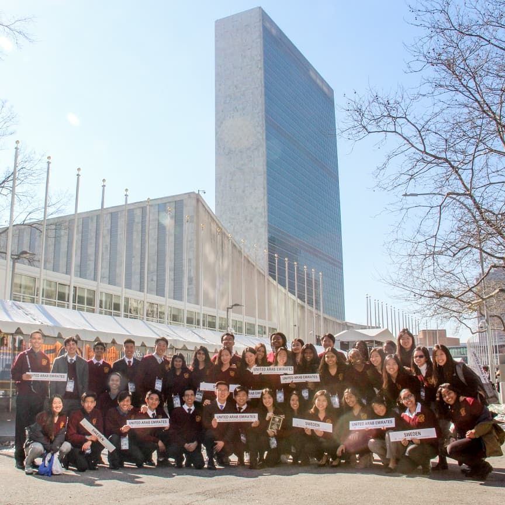
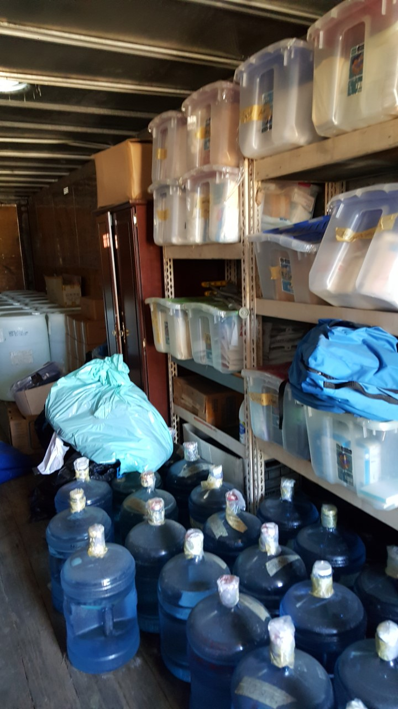
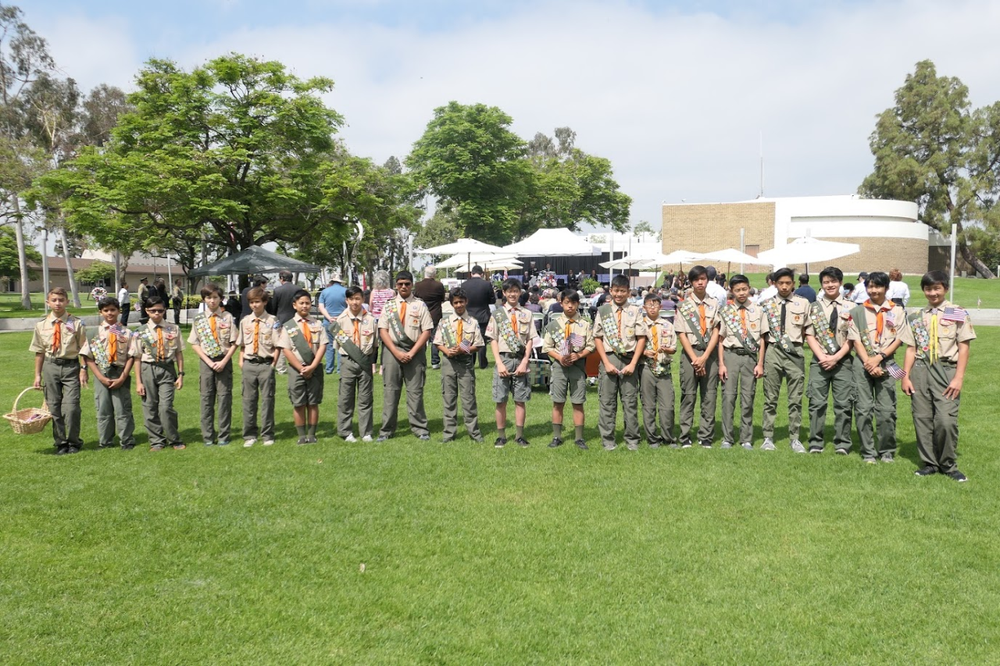
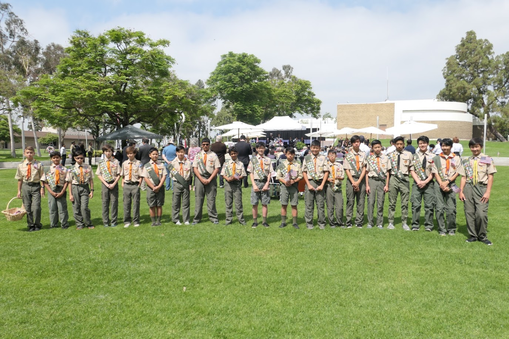

Kelvin Wang
My name is Kelvin Wang, I am a second year pre-business major currently attending UCR and am looking to major in Marketing with a minor in management. This year, I am involved in a number of business clubs on campus including FBLA(Future Business Leaders of America), AMA(American Marketing Association), and UBA(Undergraduate Business Association). I am personally very grateful for these programs as they are preparing me for my professional career once I graduate college. All clubs host meetings which consists of activities from informative slides and presentations, resume and interview workshops, and guest speakers for networking opportunities. I feel that all these clubs are doing a helping me grow tremendously and I hope to take advantage of these resources.
Last year, I was involved in ASUCR(Associated Students of the University of California Riverside). I served in the international Student committee branch as the international student affairs advisor. Unfortunately, this year I will not be part of the committee. I had originally planned to serve as the cheif of staff for the Internal Affairs advisor but there were complications during the interview process and the committee still havent replied to my emails despite commending my application. In my application I discussed the inconvinence that students faced in the miscommunication between clubs hosting activities. Often times, clubs would hold similar or important meetings that overlap which makes it very difficult for students to make the most out of the resources available at UCR. As a solution, I proposed that clubs submit a 10 week plan plotted out on a shared google calendar that can be viewed publicly. Or, have the information available on our own website or portal. This helps club organizers as they are aware of other club activites and know if rescheduling is necessary, and helps students who can view the activities from their favorite clubs all at once in one place.
Lastly, I take my achademic classes at UCR very seriously. I am currently taking critical thinking, intermediate microeconomics, and intro to computer science. These classes aren't very difficult so I must make sure I do well on them. The classes I take this quarter are pretty interesting, although my critical thinking class feels mroe like a grammar class than a course in philosophy which it is currently labeled under. The class contains more underlining than thinking so I am a bit dissapointed with how the course is structured btu the professor is enegetic and the class is enjoyable. Intermediate microeconomics is easier than I imagined, and the midterm we had felt way too easy. I am confident that if you gave that midterm to a middle schooler with all the economic terminology simplified, they would have passed with flying colors. Intro to comp sci has actually been a pleasant surprise. I originally really didn't want to take the class but we are learning about how to navigate around certain types of software like excel which are very important in professions such as business. I have learned a lot through those assignments and am happy CS008 was a required class.
Experience
Active AMA member
• learned from informational slides
• networked with guest speakers
• attended resume and linkedin workshops
• Networked with peers during socials
Active UBA Member
• learned from informational slides
• networked with guest speakers
• attended resume and linkedin workshops
• Networked with peers during socials
Active FBLA member
• learned from informational slides
• networked with guest speakers
• attended resume and linkedin workshops
• Networked with peers during socials
Education
University of California Riverside
University of California Riverside
Portfolio




